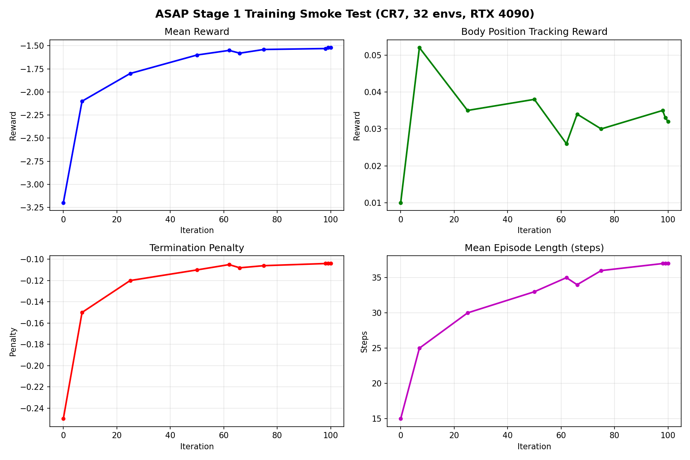

We cloned the ASAP humanoid motion
imitation repository from scratch and documented every step a first-time user
would encounter. The setup required three separate conda environments
(asap, hv_gym, asap_deploy) and the manual
resolution of 10+ undocumented dependencies, taking approximately 1.5 hours from
git clone to a working demo. We ran Sim2Sim evaluation on all five
bundled ONNX policies (APT, CR7, kick, jump forward, Kobe), retargeted five
external dance motions from AIST++ onto the Unitree G1 robot, executed a Stage 1
training smoke test (100 PPO iterations, 32 envs, ~11 min), and catalogued four
major accessibility gaps: 38 of 52 motions ship without trained policies, bundled
checkpoints cover Stage 1 only, Stage 2 requires undocumented rollout data, and
external motions need undocumented format alignment.
Bundled ONNX policies evaluated in MuJoCo. Each policy runs Stage 1 output (joint targets) through the MuJoCo G1 model. Only 5 of the 52 reference motions ship with trained policies.
Target reference motions played back on the G1 model in MuJoCo (no policy, pure joint replay). These are the ground-truth trajectories the policies aim to track.
We downloaded AIST++ dance sequences, converted them from SMPL to AMASS format, and retargeted onto the Unitree G1. This required fixing two undocumented format issues:
From git clone to running Sim2Sim demos: approximately 1.5 hours.
Three separate conda environments and 10+ undocumented dependencies required
manual resolution.
| Step | Environment | Time | Notes |
|---|---|---|---|
| Clone & read README | — | 5 min | Repo is 1.2 GB with bundled ONNX checkpoints |
Create asap env |
asap |
15 min | IsaacGym preview, torch 2.x, numpy pin |
Create hv_gym env |
hv_gym |
20 min | Humanoid-Verse fork; missing setuptools, pybullet |
Create asap_deploy env |
asap_deploy |
15 min | MuJoCo deployment; pinned mujoco==3.1.6 |
| Debug missing deps | all | 25 min | easydict, scipy, onnxruntime, lxml, etc. |
| First Sim2Sim run | asap_deploy |
5 min | Success on CR7 policy |
requirements.txt. Several transitive dependencies
(easydict, lxml, onnxruntime-gpu) are only
discovered at runtime.
100 PPO iterations on the CR7 motion to verify the training loop runs end-to-end. This represents approximately 0.04% of the full 250,000-iteration training budget.
Configuration: 100 PPO iterations, 32 parallel envs, ~11 min wall-clock on RTX 4090 (0.04% of full training).

Major gaps discovered while stress-testing the ASAP codebase:
"action" key populated from
Stage 1 rollouts. None of the 52 bundled motion files contain this key. Running
Stage 2 requires first completing a full Stage 1 training run and exporting the
rollout data—a step not documented in the README.
.pkl file. None of these steps
are documented.